Use Case
With the proliferation of the internet many of the companies are trying to become global, for example Amazon has presence in many of the countries in the world. With this expansion comes greater risk of hacking. The application stack has become so complex that always there is some sort of vulnerability in the different layers (OS, web, DB, network, storage, balancing etc) and the hackers try to exploit them for financial and other benefits. Companies have to be on their toes all the time to keep the hackers away while making sure the legitimate users are able to access the website and other applications.
Protecting the publicly exposed services like websites and REST/WebServices based interfaces consumes a lot of effort, time and money for the organizations. AWS provides a few managed services like AWS Shield and AWS WAF (Web Application Firewall) for mitigating the risks by the hacker.
AWS WAF is a service for protecting the websites and the APIs from some of the common attacks like SQL Injection, XSS (Cross Site Scripting), SSRF (Server Side Request Forgery) and including those published in OWASP (Open Web Application Security Project). Custom rules can also be required tailoring to the applications requirement.
AWS Shield provides support against the DDoS (Distributed Denial Of Service) attacks. These are the types of attacks when invalid requests are sent in bulk, while the legitimate user requests are throttled for resources. AWS Shield comes in two editions. The Standard which is free, while the Advanced costs around 3000 USD a month with a commitment of 1 year. Because of the above-mentioned pricing constraints, we won’t be able to use Shield advanced.
By default, Shield Standard is turned on for CloudFront/Route53 and there is nothing we have to do, expect use a CloudFront distribution/Route53 which automatically comes with Shield Standard.
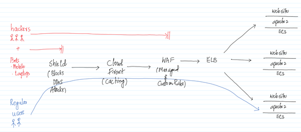
In this use case we will create an EC2 with SSRF vulnerability application deployed on it. Then we will try to mitigate the vulnerability using WAF. For this we need to create an Application Load Balancer and integrate it with WAF.
AWS Services: WAF, Shield, ELB, EC2
-- Go to the IAM Management Console and create a Role for EC2 with AmazonS3ReadOnlyAccess Policy attached to it. Make sure the name of the role is Role4EC2-S3RO.
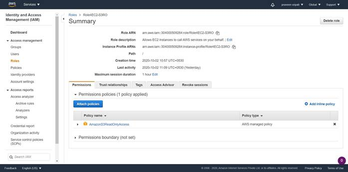
-- Create an Ubuntu EC2 with the below details and connect to it.
- t2.micro
- Security Group (22/SSH and 80/HTTP) inbound
- Above Role attached
- Keypair attached for authentication
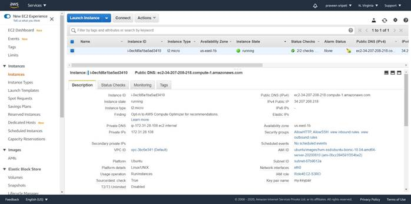
-- Execute the below command on the EC2 and notice the Access Keys are displayed as part of the “AccessKeyId” and “SecretAccessKey” fields. This is displayed because it’s part of the EC2 instance metadata and can be retrieved as mentioned here.
curl http://169.254.169.254/latest/meta-data/iam/security-credentials/Role4EC2-S3RO
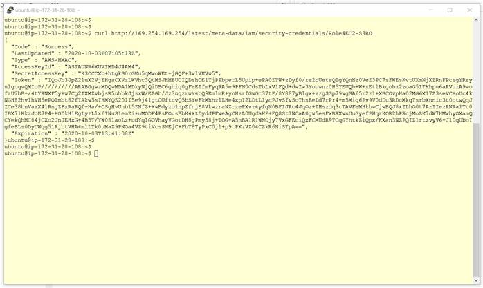
-- Execute the below commands in the EC2 to install Ruby and Sinatra, which is a DSL (Domain Specific Language) for creating web applications in Ruby. Installation of sinatra will take a few minutes for completion.
sudo apt-get update
sudo apt-get install ruby -y
sudo gem install sinatra
-- On the EC2 create a file server.rb with the below content. This is what the program does
- Create a HTTP endpoint (webserver) on port 80
- Takes a URL as an input (query parameter) via HTTP
- Invokes the same URL via the open function
- Responds back the response from the URL
require 'sinatra'
require 'open-uri'
get '/' do
format 'RESPONSE: %s', open(params[:url]).read
end
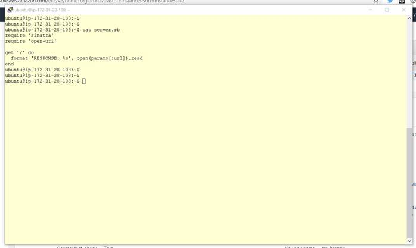
-- Run the program using the below command. Make sure to replace the IP address with the private IP address of the EC2. The program will go in a infinite loop and if any other command has to be run on the EC2 then a new session has to be opened.
sudo ruby server.rb -o 172.31.28.108 -p 80
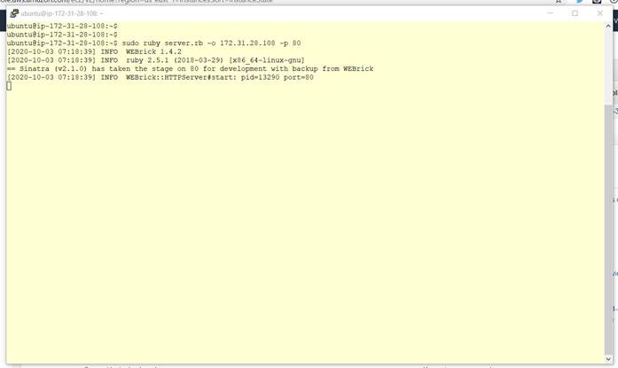
-- Open the below URL in a browser and note that the AccessKeyId and the SecretAccessKey are displayed as shown below. This happens because the program executed above will take a URL, invoke it and send the response back. There is no check on what the URL is and can the internal network can be probed. Make sure to replace 34.207.208.218 with the Public IP of the EC2 instance.
http://34.207.208.218?url=http://169.254.169.254/latest/meta-data/iam/security-credentials/Role4EC2-S3RO
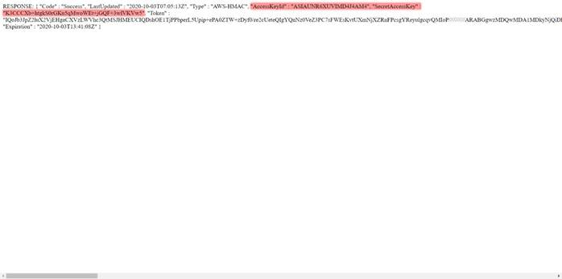
-- Go to the EC2 Management Console and create a Target Group called MyTG and attach register the above EC2 with it.
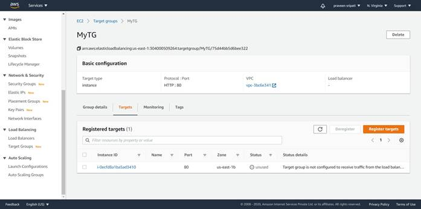
-- In the same EC2 Management Console, create an Application Load Balancer and specify the Target Group as the default forwarding destination as shown below. Under the listeners Tab, it should appear as shown below.
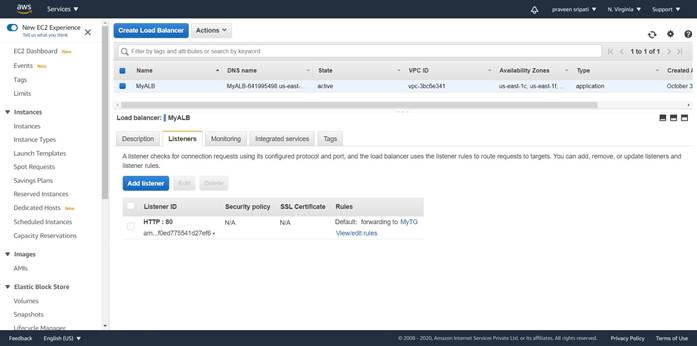
-- Make sure to note down the DNS name of the Load Balancer.
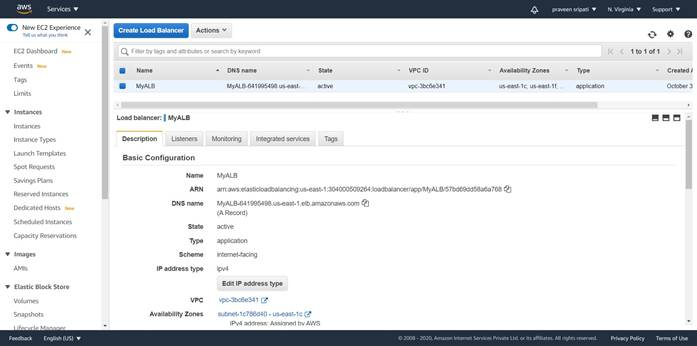
-- Open the below URL in the browser and the Access Keys are displayed in the browser as there is still a vulnerability in the application. These Access Keys can be used to read the data from S3 as we have given the Read-Only permissions to the EC2 via the IAM Role. Make sure to replace elb.com with the DNS name of the Load Balancer.
http://elb.com?url=http://169.254.169.254/latest/meta-data/iam/security-credentials/Role4EC2-S3RO
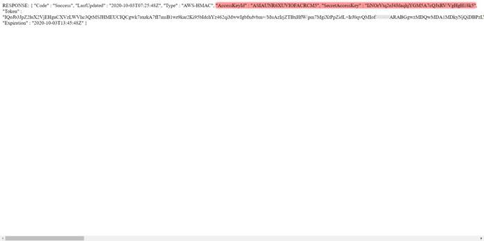
-- Now, we will try to mitigate the vulnerability in the application using a WAF. Go to the WAF Management Console and click on “Create web ACL”.
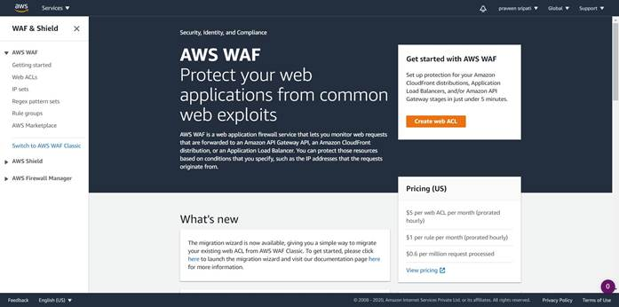
-- Give a Name and provide some description as shown below.
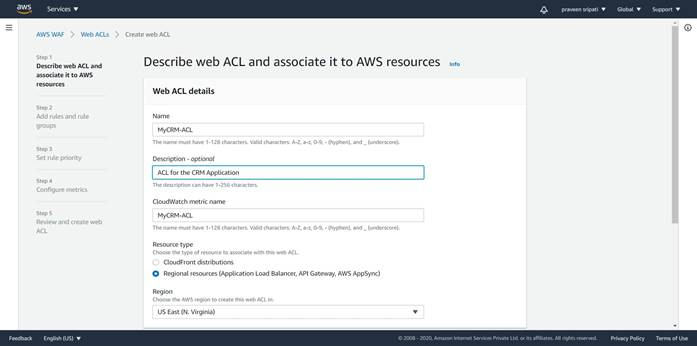
-- In the same screen, click on “Add AWS resources”.
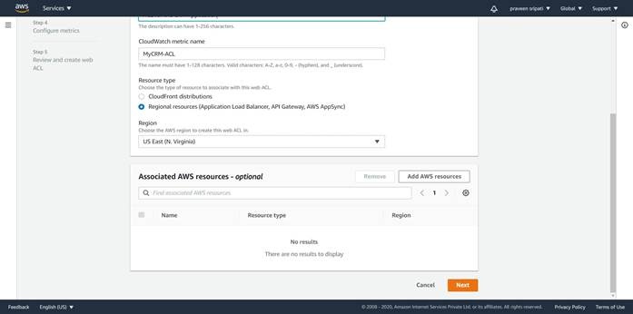
-- Make sure to select “Application Load Balancer” and select “MyALB” the previously created Load Balancer from the list. Click on Add.
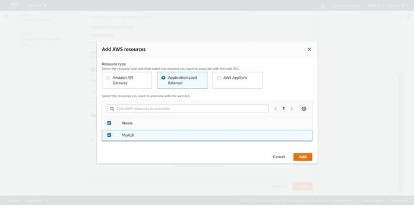
-- Click on Next.

-- Click on “Add rules à Add my own rules and rule groups”.
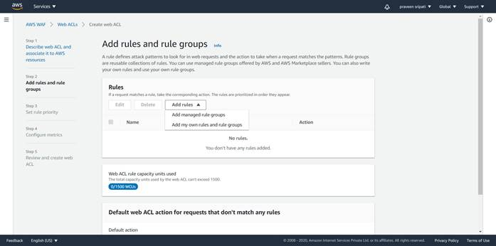
-- Make sure to select the “Rule builder” and specify the rule name as “RuleForSSRF” and type of rule as “Regular rule”.
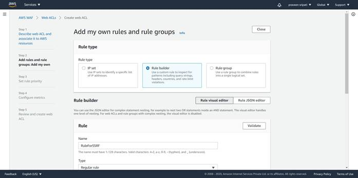
-- In the “If a request” select “matches the statement” select
- “Query string” for Inspect
- “Contains string” for “Match type”
- “169.254.169.254” for “String to match”
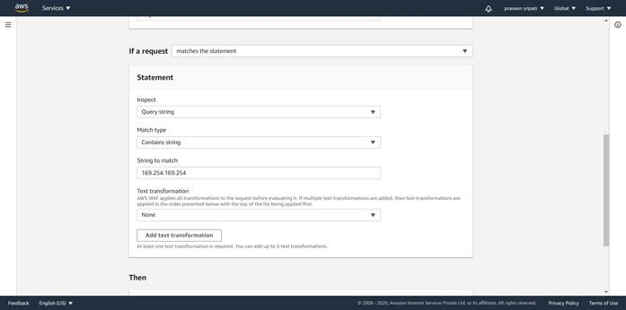
-- For the Action select Block. Click on “Add rule”.
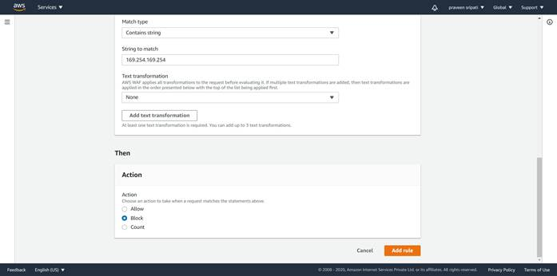
-- The rule will be created as shown below. Click on Next.
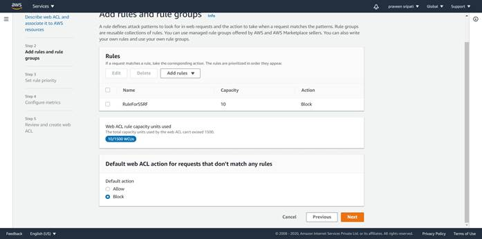
-- There is only one rule and so need to set any priority for the rule. Click on Next.
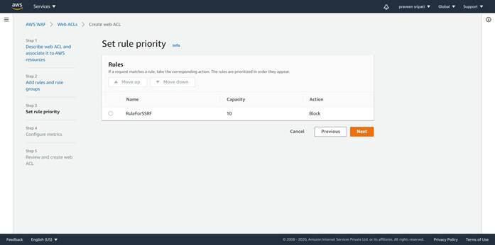
-- Click on Next.
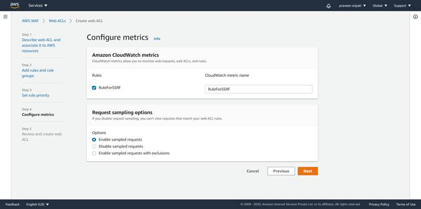
-- Review the web ACL and click on “Create web ACL”.
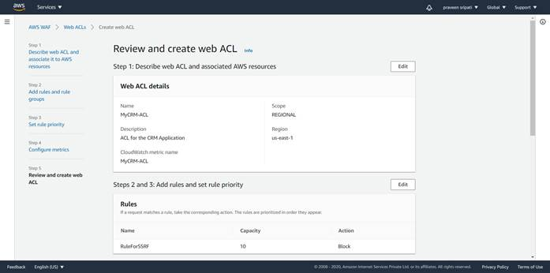
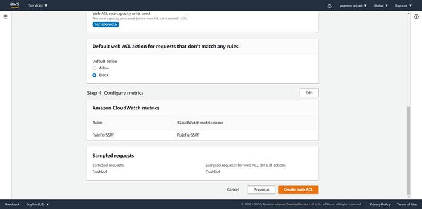
-- The Web ACL would be created as show below.
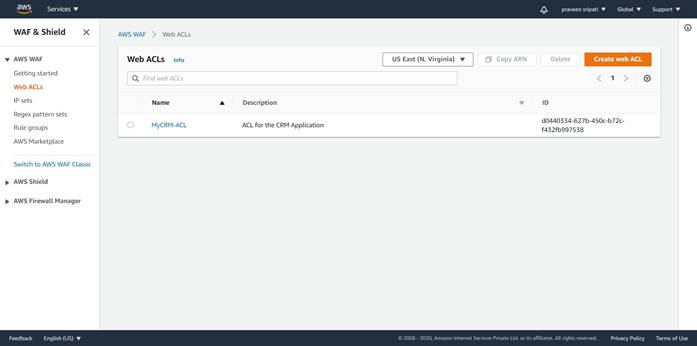
-- Open the below URL in the browser and “403 Forbidden” is displayed in the browser. This happens because 169.254.169.254 is there the URL and this is blocked by the WAF. Make sure to replace elb.com with the DNS name of the Load Balancer.
http://elb.com?url=http://169.254.169.254/latest/meta-data/iam/security-credentials/Role4EC2-S3RO
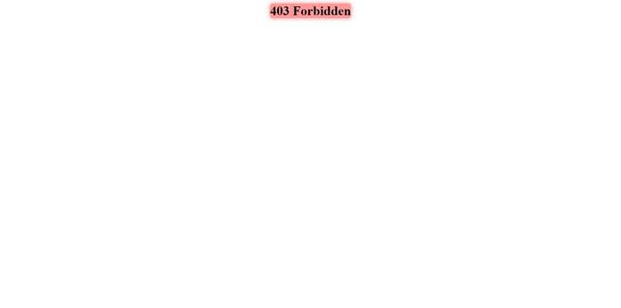
-- FYI, before deleting the ACL, we need to make sure that the “Associated AWS resources” are deleted or else AWS won’t allow the ACL to be deleted.
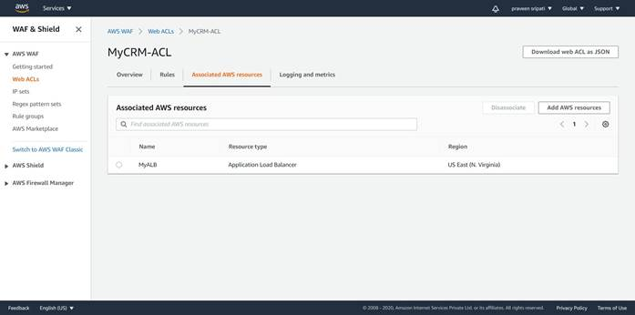
Conclusion
We had a vulnerability in the application and it was displaying the Access Keys in the browser which can be exploited to get the data from S3. Although there is still a vulnerability in the application, we mitigated it using a custom rule in WAF.